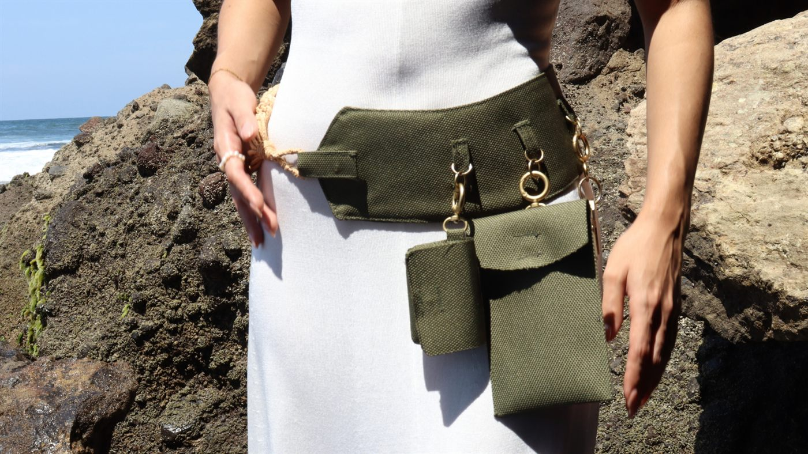
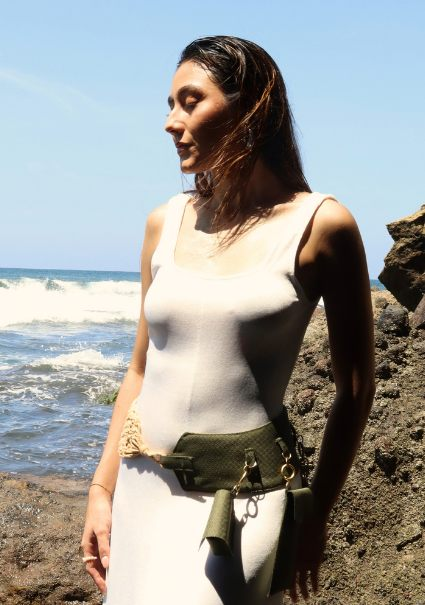
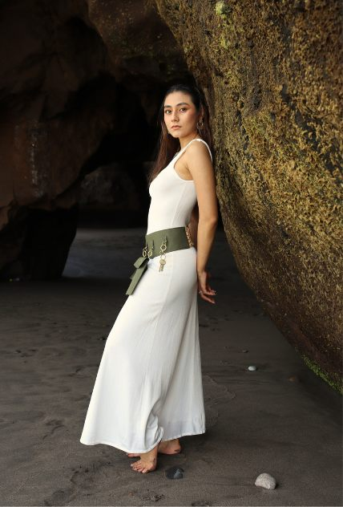
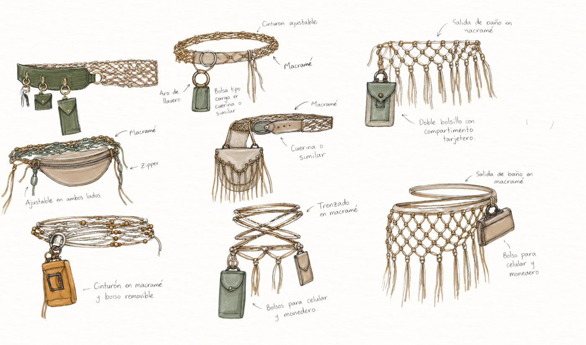

Accesorios
Enredo
Concepto y racional
En nuestro mundo tan globalizado, lleno de infinitas permutaciones de información virtual, podemos vivir la realidad que queramos y experimentar una interacción sin barreras, llenándonos de recuerdos con distintas personas en diferentes escenarios. Sin embargo, lo que complica nuestras interacciones son nuestros egos, diferentes y especiales por el simple hecho de su singularidad.
Estas partes de nosotros son como un enredo de momentos, formas y profundidades: de personas, lugares, animales y hasta las cosas más pequeñas que podamos valorar. Y es justo ahí donde reluce nuestra creatividad, como un paso al frente de nuestro ego, de camino a la empatía dentro de ese gran enredo.
Todas nuestras formas están guardadas en algún lugar de nuestra memoria, junto a lugares y experiencias trascendentales. Por eso las recordamos como mini bolsos, diversos en su forma y en sus detalles, repartidos en un tejido: una base de tiras de tela superpuestas que abraza las caderas, con abalorios que simulan cristales cosidos, todo sostenido en un cinturón que celebra esa travesía.
- Cinturón ajustable
- Macramé, aro de llavero y bolsa tipo cargo en cuerina
- Riñonera
- Macramé con zipper, ajustable en ambos lados
- Salida de baño
- Macramé con doble bolsillo y compartimento tarjetero
- Cinturón trenzado
- Bolsos removibles para celular y monedero



